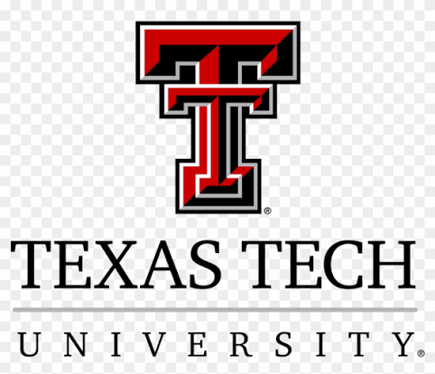

My goals with this course CMPA 3301 (Texas Tech University) are to gain fundamental knowledge in web development and programming. Also to learn all the basics about project management, which will be guided by our textbook "Project Management for the Unofficial Project Manager", by Kory Kogon and Suzette Blakemore. Learning how to be a good project manager will be very important for me, because once I start creating software, that will be a project, and there will be a need to scope my project, define its purpose, describe the project, desired results and exclusions. With this course I intend to establish a baseline of knowledge so I can built on it for future concentration classes from my major in Computer Applications. Also, I will learn how to use programming software like Studio Visual Code and GitHub.
My career goal is to become a successful software creator. I already work in the medical field and have knowledge of challenges faced by patients with chronic medical problems and challenges faced by physicians. I want to learn computer programming, so I can apply it to my medical experience, so I can create software that may help patients deal with their conditions in a better way and also makes the delivery of medical care more effective. I would like my future software to be used by patients and physicians alike, so it helps overcome current obstacles in the medical field. Another career goal of mine is to grow as a person and as a professional, so with all the knowledge acquired in these courses I may find a better job in both the medical and computer fields.
Currently, patients have severe challenges on finding the right resources and support for their conditions. For example, patients, normally speaking, can't access their medical records easily yet, because the current electronic medical records are difficult to navigate and for regular people are not that simple to use. Also, patients have difficulties accessing their physicians, because they still rely on normal phone calls and operators in old fashioned ways. More medical offices nowadays are using robot answering services that are very difficult to navigate and regularly never lead to a live person operator. Patients who have now access to medical software have means to communicate with their respective doctors, but they are very complex and not useful in real life. I would like to create software that may be used to overcome these obstacles and that it easy to use for patients and widely available for everyone.
I would also like my future software to be helpful for physicians. Medical offices still have issues contacting patients when needed. Still rely on a medical assistant making multiple phone calls, many times unable to reach a patient because he/she is working or unavailable, just to have the patient call back after business hours when there is nobody available at the office to answer anymore. Overnight answering services normally just take a message and forward it to the office but are unable to help patients. Sometimes, medical problems can be worsened by the delay of appropriate medical care. I believe software could be helpful so physicians and patients can communicate easily, both ways, with their smartphones, without the need of regular phone lines anymore.
Finally, I would like to create medical software that may be useful for patients so they know what to do when they have specific signs and symptoms, that is easy to use and reliable, and at the same time informs their physician about the situation the patient is in. Many times, by acting quickly and coordinated, several illnesses can be controlled before they spiral out of control.
Please visit my GitHub Profile
July 5th, 2026